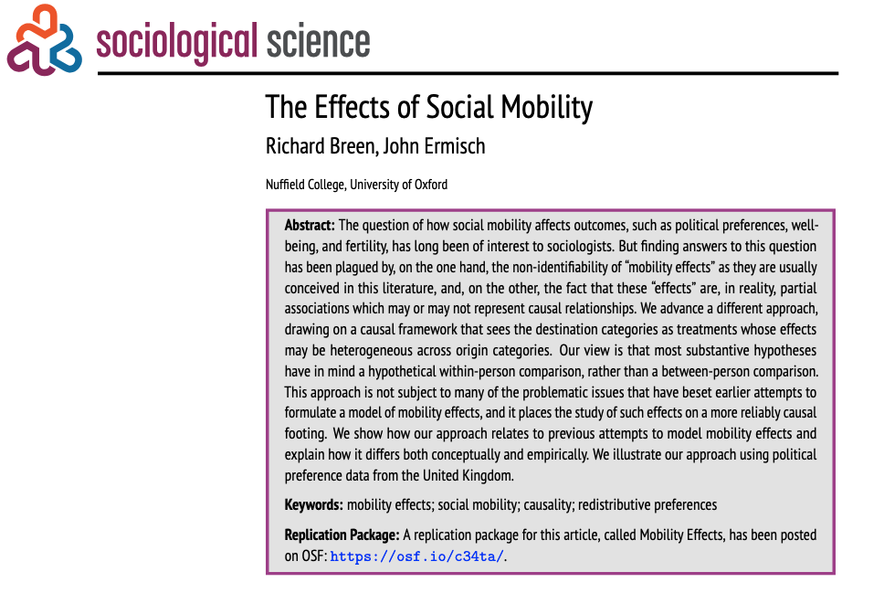
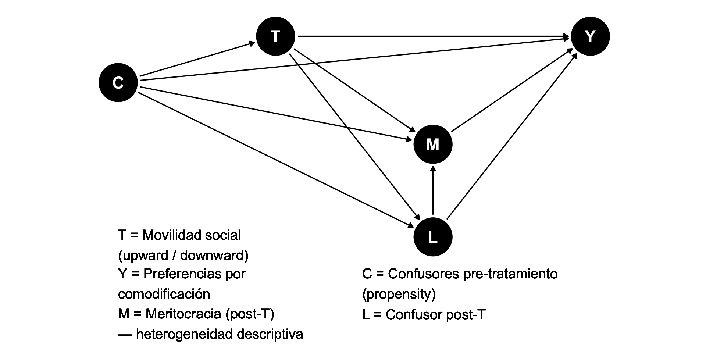
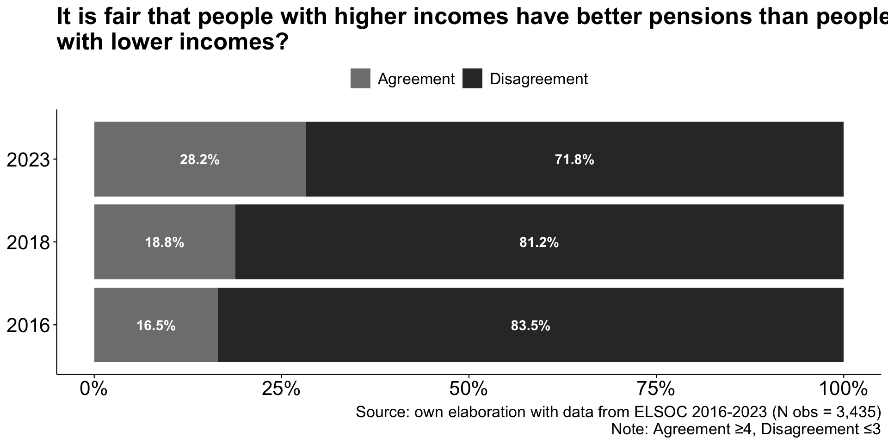
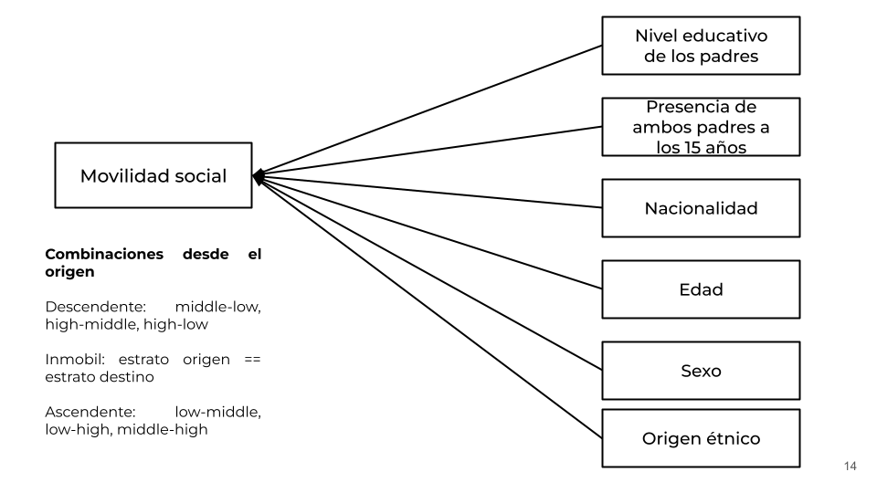
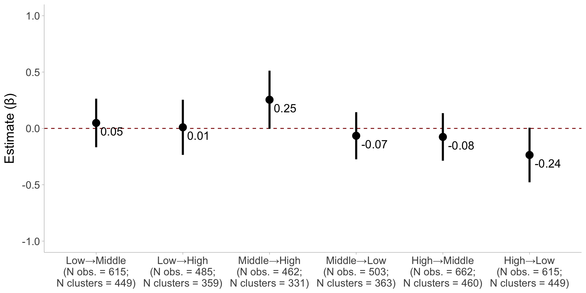
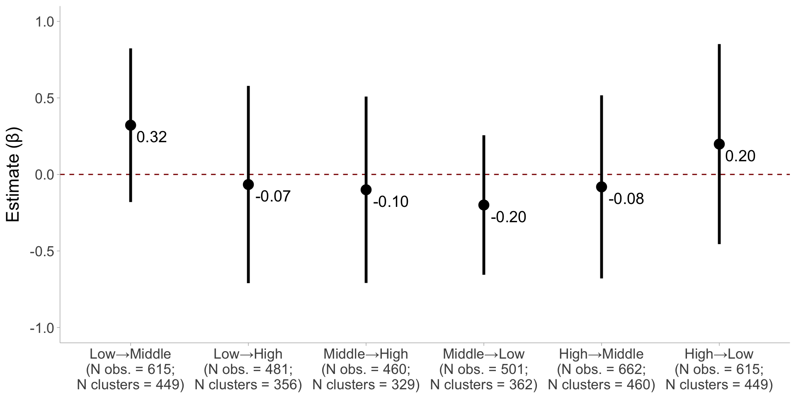
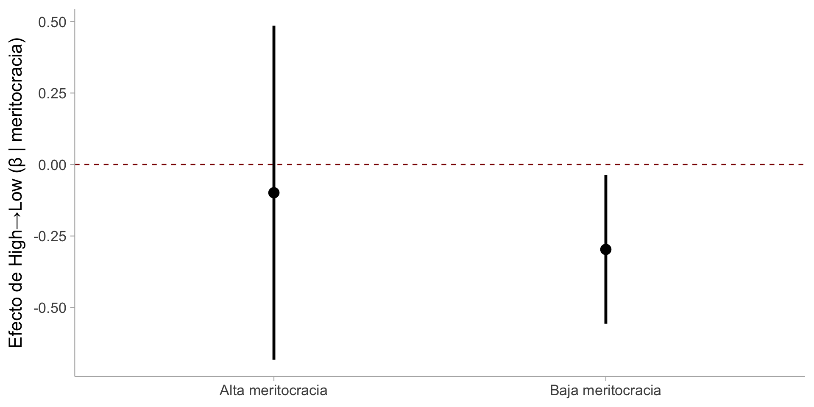

| Father stratum | Offspring stratum | Total | ||
|---|---|---|---|---|
| Low | Middle | High | ||
| Low | 571 44.7 % 42.2 % |
435 34 % 34.3 % |
272 21.3 % 21.7 % |
1278 100 % 33 % |
| Middle | 436 34.6 % 32.2 % |
448 35.6 % 35.3 % |
376 29.8 % 29.9 % |
1260 100 % 32.5 % |
| High | 345 25.7 % 25.5 % |
387 28.9 % 30.5 % |
608 45.4 % 48.4 % |
1340 100 % 34.6 % |
| Total | 1352 34.9 % 100 % |
1270 32.7 % 100 % |
1256 32.4 % 100 % |
3878 100 % 100 % |
| χ2=198.038 · df=4 · Cramer's V=0.160 · p=0.000 | ||||

Movilidad social y preferencias por la comodificación de pensiones en Chile
Andreas Laffert1,2
1Instituto de Sociología, Pontificia Universidad Católica de Chile
2Centro de Estudios de Conflicto y Cohesión Social - COES
Seminario de tesis
Supervisores: Prof. Mauricio Bucca y Prof. Andrea Canales
8 Octubre 2025, Santiago
Contexto y motivación
Contexto y motivación
Antecedentes
- Privatización y mercantilización de bienes públicos, políticas de bienestar y servicios sociales (Gingrich, 2011; Streeck, 2016)
- En AL y Chile, modificaron la arquitectura de las instituciones del bienestar expandiendo lógica de mercado (Ferre, 2023; Madariaga, 2020)
- Este orden económico se refleja en una economía moral específica (Mau, 2015; Svallfors, 2006)
Preferencias por justicia de mercado (Busemeyer, 2014; Castillo et al., 2025; Koos & Sachweh, 2019; Lindh, 2015)
Preferencias por justicia de mercado
Lane (1986): justicia de mercado vs. justicia política
Creencias normativas que legitiman la idea de que el acceso a los servicios sociales esenciales —como la salud, la educación o las pensiones— debe determinarse según criterios basados en el mercado (Lindh, 2015, p. 895)
Medición: evaluar si las personas consideran justo que el acceso a dichos servicios dependa de los ingresos (Castillo et al., 2025; Kluegel et al., 1999; Lindh, 2015)
Preferencias por la comodificación de servicios
Contexto chileno
- Crecimiento con elevada desigualdad (Flores et al., 2020; Llorca-Jaña & Miller, 2021)
- Rigida movilidad relativa y fuerte clausura cúspide (López-Roldán & Fachelli, 2021; Torche, 2014)
- Profunda privatización y comodificación de áreas de reproducción social con fuerte dependencia Estatal (Boccardo, 2020; Madariaga, 2020)
- Pensiones: sistema de capitalización individual administrado por AFPs; cubre ~11 millones de cotizantes, pero 27% de la fuerza laboral queda fuera por informalidad (Superintendencia de Pensiones, 2024)
- Conflictividad social previsional (Núcleo de Sociología Contingente, 2020; Somma et al., 2021) y legitimidad del sistema (“con mi plata no”) (Canales Cerón et al., 2021; Castillo et al., 2025; Panes, 2020)
Preferencias por la comodificación de servicios
Contextual
- Gasto social (Busemeyer, 2014; Busemeyer & Iversen, 2020; Immergut & Schneider, 2020)
- Desigualdad económica (Koos & Sachweh, 2019)
- Nivel de privatización de servicios y regulación del mercado (Koos & Sachweh, 2019; Lindh, 2015)
Individual
- Estatus socioeconómico -ingresos, educación y ocupación- (Busemeyer & Iversen, 2020; Koos & Sachweh, 2019; Lindh, 2015; Svallfors, 2007)
- Percepciones sobre la desigualdad y meritocracia (Castillo et al., 2025)
- Conservadurismo/liberalismo económico (Lee & Stacey, 2023)
Preferencias por la comodificación de servicios: Chile
Otero & Mendoza (2024) proveen evidencia sobre:
- Personas en posiciones sociales bajas/subordinadas muestran menor apoyo a la justicia de mercado que aquellas en posiciones altas/privilegiadas.
Castillo et al. (2025) encuentran que:
- La percepción de la desigualdad económica reduce el apoyo a la justicia de mercado.
- Las percepciones meritocráticas (esfuerzo) aumenta el respaldo a la justicia de mercado.
Sin embargo…
Este estudio
El movimiento entre posiciones sociales expone a los individuos a condiciones y experiencias que afectan sus nociones de justicia distributiva (Alesina et al., 2018; Ares, 2020; Day & Fiske, 2017; Gugushvili, 2017)
¿Cómo? Movilidad ascendente refuerza ver al mercado como asignador justo, la descendente lo cuestiona. La meritocracia es un canal cognitivo para ese proceso (Gugushvili, 2016; Mau, 2015).
(1) ¿Cómo la movilidad social intergeneracional afecta las preferencias por la comodificación de las pensiones en Chile?
(2) ¿En qué medida las creencias meritocráticas condicionan esta relación?
Movilidad social
Preferencias redistributivas (Alesina et al., 2018; Ares, 2020; Breen & Ermisch, 2024; Schmidt, 2011)
Legitimidad de la desigualdad económica (Gugushvili, 2016), política social (Gugushvili, 2017) y creencias sobre la desigualdad (Bucca, 2016; Day & Fiske, 2017)
Diversos mecanismos explicativos (Helgason & Rehm, 2025):
- self-interest (ej. intereses materiales, POUM)
- socialización (ej. aculturación, socialización valores, máximización estatus)
- atribuciones (ej. self-serving bias)
El mecanismo del self-serving bias
- Las personas ajustan sus creencias sobre justicia según cómo explican su posición social (Gugushvili, 2016; Miller & Ross, 1975).
- Las experiencias de movilidad activan procesos de atribución causal:
- Interna → éxito por esfuerzo → el mercado es justo.
- Externa → fracaso por factores estructurales → el mercado es injusto.
- Interna → éxito por esfuerzo → el mercado es justo.
- Ascenso: refuerza la creencia de que el mercado premia el mérito.
- Descenso: puede generar disonancia y cuestionar esa justicia.
¿Cómo?
- No solo cambia intereses materiales, también cambia cómo las personas entienden la justicia (Gugushvili, 2016; Helgason & Rehm, 2025).
- Al moverse, los individuos recalibran sus creencias sobre la meritocracia (Mijs et al., 2022).
- Movilidad ascendente → refuerza la creencia en un mercado justo (asignador legítimo de recompensas).
- Movilidad descendente → desafía esa creencia (percepción de arbitrariedad o injusticia).
- La meritocracia filtra estas experiencias (Mau, 2015):
- Fuerte creencia en mérito → mantiene la fe en la justicia del mercado (disonancia resuelta internamente).
- Débil creencia en mérito → percibe el sistema como injusto (disonancia resuelta externamente).
- Fuerte creencia en mérito → mantiene la fe en la justicia del mercado (disonancia resuelta internamente).
Hipótesis
H1: La movilidad ascendente refuerza las preferencias por comodificación de pensiones, mientras que la movilidad descendente las reduce.
H2a. El efecto positivo de la movilidad ascendente sobre el apoyo a la mercantilización es más fuerte entre las personas con creencias meritocráticas más sólidas.
→ Self-serving bias: el ascenso confirma que el sistema recompensa el esfuerzo.H2b. El efecto negativo de la movilidad descendente sobre el apoyo a la mercantilización es más débil entre las personas con creencias meritocráticas más fuertes.
→ Resolución de la disonancia: los meritócratas internalizan la pérdida («mi culpa»), mientras que los no meritócratas la atribuyen al sistema («es injusto»).
Método
Enfoque: Mobility Effects

- Breen & Ermisch (2024) proponen un método para estimar el efecto (causal) de la movilidad social intergernacional sobre un outcome
- ¿En qué habría cambiado el resultado Y entre las personas de origen j que llegaron al destino k si, hipotéticamente, hubieran llegado al destino k’?
Estrategia de identificación causal

- M es post-tratamiento; lo uso para caracterizar heterogeneidad del efecto, sin atribuir causalidad a T×M. El efecto principal (ATT) no depende de M.
Datos
Encuesta Longitudinal Social de Chile (ELSOC) de COES.
Muestra analítica: olas 2016 (N = 2.927), 2018 (N = 3.748) y 2023 (N = 2.726)
Encuesta panel representativa de zonas urbanas, localizadas en 40 ciudades del país (92 comunas y 13 regiones)
Diseño muestral complejo: probabilístico, por conglomerados, multietápico y estratificado según el tamaño de las ciudades.
Población objetivo incluye a mujeres y hombres de entre 18 y 75 años que residen habitualmente en viviendas privadas
Outcome

Tratamiento
Siguiendo la propuesta de Breen & Ermisch (2024) para estimar el efecto causal de la movilidad social:
Asignación de clase (O y D): Con ISCO-08/ISEI, defino origen (O ∈ {bajo, medio, alto}) y destino (D). Para cada origen (O=j), el tratamiento es llegar a (D=k) (móvil) vs inmóvil (D=j).
ATT por entropy balancing (no PS):
- En cada estrato (O=j), uso
ebalpara reponderar solo a los controles (inmóviles) e igualar sus valores de los confusores pre-tratamiento (C) a los de los tratados (móviles).
- Obtengo IPW-ATT estabilizados (tratados=1; controles = pesos de
ebal).
- En cada estrato (O=j), uso
Tratamiento
- N (id único) = 4.447. Porcentajes en azul corresponde a las filas y en verde a las columnas.
Tratamiento

Heterogenidad causal
Meritocracia: se mide a partir de la percepción de recompensa del esfuerzo (Young, 1958)
Medición:
- Ítem: “En Chile, se recompensa a las personas por su esfuerzo”
- Escala Likert de 1 (totalmente en desacuerdo) a 5 (totalmente de acuerdo).
- Fue dicotomizado de modo tal que baja meritocracia (≤ 3) y alta meritocracia (≥ 4)
Estimand
- Breen & Ermisch (2024): Efecto causal promedio de pasar de una clase de origen j a una clase de destino k comparando a las personas que realmente alcanzan k con su resultado contrafactual si se hubieran trasladado a un destino alternativo k′ (Ecuación 1).
\[ ATT_{j,k,k′} =E[Y(D=k|O=j, D=k)]−E[Y(D=k′|O=j, D=k)] \qquad(1)\]
- Mi interés es comparar con la situación de inmobilidad: cuando k’ = j (Ecuación 2)
\[ ATT_{j,k,j} =E[Y(D=k|O=j, D=k)]−E[Y(D=j|O=j, D=k)] \qquad(2)\]
Estimador
\[ Y_i = \alpha + \beta T_i + X_i'\gamma + \lambda_{t(i)} + \varepsilon_i \quad \text{(WLS con IPW–ATT, CR2 por id)} \]
- Muestra: individuos con mismo origen de clase \(O=j\)
- Outcome: \(Y_i\) preferencia por comodificación de pensiones
- Tratamiento: \(T_i=1\) si \(D_i=k\) (móvil), \(T_i=0\) si \(D_i=j\) (inmóvil)
- Pesos: IPW–ATT estabilizados con
ebal
- Errores estándar: CR2 clusterizados por id
- Efectos fijos: \(\lambda_{t(i)}\) por ola
- Controles: \(X_i'\gamma\) covariables propensity score movilidad
- Interpretación: \(\beta = \widehat{ATT}_{j,k,j}\)
→ efecto causal de alcanzar destino \(k\) respecto a permanecer en \(j\)
Resultados
Mobility effects

Heterogenidad

Heterogenidad

Discusión y proyecciones
Discusión y proyecciones
Movilidad social: no hay efectos significativos. Sin embargo, existe cierta evidencia en la dirección de \(H1\):
- Middle→High incrementa la preferencia por comodificación en pensiones.
- High→Low disminuye la preferencia por comodificación en pensiones.
Meritocracia: Entre quienes son escépticos con la meritocracia, descender High→Low implica preferir menos comodificación de pensiones (\(H2b\)).
Contexto chileno: profunda comodificación y privatización de servicios escenciales → trabajador-empresario
Gracias por su atención!
- Github del proyecto: https://github.com/Andreas-Lafferte/mobility-market-justice
Referencias
Bien, y cómo entra la creencia meritocratica en este diagrama de hipotesis y DAG causal entonces?
Alesina, A., Stantcheva, S., & Teso, E. (2018). Intergenerational Mobility and Preferences for Redistribution. American Economic Review, 108(2), 521-554. https://doi.org/10.1257/aer.20162015
Ares, M. (2020). Changing Classes, Changing Preferences: How Social Class Mobility Affects Economic Preferences. West European Politics, 43(6), 1211-1237. https://doi.org/10.1080/01402382.2019.1644575
Boccardo, G. (2020). 30 Años de Privatizaciones En Chile: Lo Que La Pandemia Reveló (Nodo XXI). Santiago.
Breen, R., & Ermisch, J. (2024). The Effects of Social Mobility. Sociological Science, 11, 467-488. https://doi.org/10.15195/v11.a17
Bucca, M. (2016). Merit and Blame in Unequal Societies: Explaining Latin Americans’ Beliefs about Wealth and Poverty. Research in Social Stratification and Mobility, 44, 98-112. https://doi.org/10.1016/j.rssm.2016.02.005
Busemeyer, M. (2014). Skills and Inequality: Partisan Politics and the Political Economy of Education Reforms in Western Welfare States. Cambridge University Press.
Busemeyer, M., & Iversen, T. (2020). The Welfare State with Private Alternatives: The Transformation of Popular Support for Social Insurance. The Journal of Politics, 82(2), 671-686. https://doi.org/10.1086/706980
Canales Cerón, M., Orellana Calderón, V. S., & Guajardo Mañán, F. (2021). Sujeto y Cotidiano En La Era Neoliberal: El Caso de La Educación Chilena. Revista Mexicana de Ciencias Políticas y Sociales, 67(244). https://doi.org/10.22201/fcpys.2448492xe.2022.244.70386
Castillo, J. C., Laffert, A., Carrasco, K., & Iturra, J. (2025). Perceptions of Inequality and Meritocracy: Their Interplay in Shaping Preferences for Market Justice in Chile (2016-2023). Under Review at Frontiers in Sociology.
Day, M. V., & Fiske, S. T. (2017). Movin’ on Up? How Perceptions of Social Mobility Affect Our Willingness to Defend the System. Social Psychological and Personality Science, 8(3), 267-274. https://doi.org/10.1177/1948550616678454
Ferre, J. C. (2023). Welfare Regimes in Twenty-First-Century Latin America. Journal of International and Comparative Social Policy, 39(2), 101-127. https://doi.org/10.1017/ics.2023.16
Flores, I., Sanhueza, C., Atria, J., & Mayer, R. (2020). Top Incomes in Chile: A Historical Perspective on Income Inequality, 1964–2017. Review of Income and Wealth, 66(4), 850-874. https://doi.org/10.1111/roiw.12441
Gingrich, J. R. (2011). Making Markets in the Welfare State: The Politics of Varying Market Reforms (1.ª ed.). Cambridge University Press. https://doi.org/10.1017/CBO9780511791529
Gugushvili, A. (2016). Intergenerational Social Mobility and Popular Explanations of Poverty: A Comparative Perspective. Social Justice Research, 29(4), 402-428. https://doi.org/10.1007/s11211-016-0275-9
Gugushvili, A. (2017). Subjective Intergenerational Mobility and Support for Welfare State Programmes.
Helgason, A. F., & Rehm, P. (2025). Class Experiences and the Long-Term Evolution of Economic Values. Social Forces, 103(3), 1125-1143. https://doi.org/10.1093/sf/soae135
Immergut, E. M., & Schneider, S. M. (2020). Is It Unfair for the Affluent to Be Able to Purchase «Better» Healthcare? Existential Standards and Institutional Norms in Healthcare Attitudes across 28 Countries. Social Science & Medicine, 267, 113146. https://doi.org/10.1016/j.socscimed.2020.113146
Kluegel, J. R., Mason, D. S., & Wegener, B. (1999). The Legitimation of Capitalism in the Postcommunist Transition: Public Opinion about Market Justice, 1991-1996. European Sociological Review, 15(3), 251-283. Recuperado de https://www.jstor.org/stable/522731
Koos, S., & Sachweh, P. (2019). The Moral Economies of Market Societies: Popular Attitudes towards Market Competition, Redistribution and Reciprocity in Comparative Perspective. Socio-Economic Review, 17(4), 793-821. https://doi.org/10.1093/ser/mwx045
Lane, R. E. (1986). Market Justice, Political Justice. American Political Science Review, 80(2), 383-402. https://doi.org/10.2307/1958264
Lee, J.-S., & Stacey, M. (2023). Fairness Perceptions of Educational Inequality: The Effects of Self-Interest and Neoliberal Orientations. The Australian Educational Researcher. https://doi.org/10.1007/s13384-023-00636-6
Lindh, A. (2015). Public Opinion against Markets? Attitudes towards Market Distribution of Social Services – A Comparison of 17 Countries. Social Policy & Administration, 49(7), 887-910. https://doi.org/10.1111/spol.12105
Llorca-Jaña, M., & Miller, R. M. D. (2021). Historia económica de Chile desde la independencia. Santiago de Chile: RIL editores.
López-Roldán, P., & Fachelli, S. (Eds.). (2021). Towards a Comparative Analysis of Social Inequalities between Europe and Latin America. Cham: Springer International Publishing. https://doi.org/10.1007/978-3-030-48442-2
Madariaga, A. (2020). The Three Pillars of Neoliberalism: Chile’s Economic Policy Trajectory in Comparative Perspective. Contemporary Politics, 26(3), 308-329. https://doi.org/10.1080/13569775.2020.1735021
Mau, S. (2015). Inequality, Marketization and the Majority Class: Why Did the European Middle Classes Accept Neo-Liberalism? Houndmills: Palgrave Macmillan.
Mijs, J. J. B., Daenekindt, S., De Koster, W., & Van Der Waal, J. (2022). Belief in Meritocracy Reexamined: Scrutinizing the Role of Subjective Social Mobility. Social Psychology Quarterly, 85(2), 131-141. https://doi.org/10.1177/01902725211063818
Miller, D. T., & Ross, M. (1975). Self-Serving Biases in the Attribution of Causality: Fact or Fiction? Psychological Bulletin, 82(2), 213-225. https://doi.org/10.1037/h0076486
Núcleo de Sociología Contingente, [NUDESOC]. (2020). Informe de Resultados Oficial Encuesta Zona Cero. Santiago de Chile.
Otero, G., & Mendoza, M. (2024). The Power of Diversity: Class, Networks and Attitudes Towards Inequality. Sociology, 58(4), 851-876. https://doi.org/10.1177/00380385231217625
Panes, D. (2020). Críticas y Experiencias Obreras En Torno al Sistema de AFP’s En Chile (1981-2020) (Tesis doctoral). Universidad de Chile, Santiago.
Schmidt, A. W. (2011). The Experience of Social Mobility and the Formation of Attitudes toward Redistribution. En.
Somma, N. M., Bargsted, M., Disi Pavlic, R., & Medel, R. M. (2021). No Water in the Oasis: The Chilean Spring of 2019–2020. Social Movement Studies, 20(4), 495-502. https://doi.org/10.1080/14742837.2020.1727737
Streeck, W. (2016). How Will Capitalism End? Essays on a Failing System. London: Verso.
Superintendencia de Pensiones. (2024). Estadísticas de Afiliados En AFP En Sistema de Pensiones. Abril 2024. Superintendencia de Pensiones.
Svallfors, S. (2006). The Moral Economy of Class: Class and Attitudes in Comparative Perspective. Stanford University Press.
Svallfors, S. (Ed.). (2007). The Political Sociology of the Welfare State: Institutions, Social Cleavages, and Orientations (1.ª ed.). Stanford University Press. https://doi.org/10.2307/j.ctvr0qv0q
Torche, F. (2014). Intergenerational Mobility and Inequality: The Latin American Case. Annual Review of Sociology, 40(1), 619-642. https://doi.org/10.1146/annurev-soc-071811-145521
Young, M. (1958). The Rise of the Meritocracy. New Brunswick, N.J., U.S.A: Transaction Publishers.